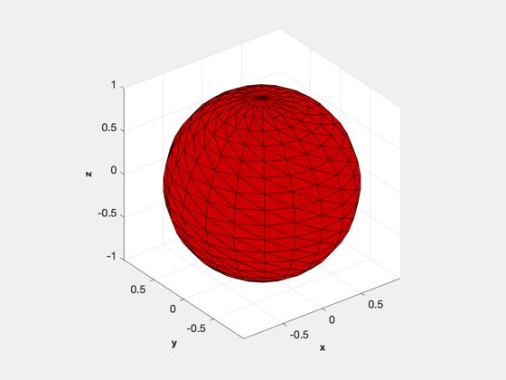
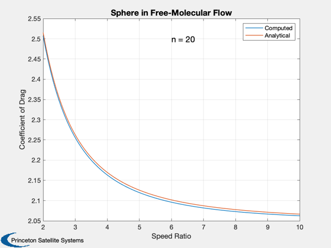

Contents
Surface accommodation drag on a sphere
Numerically compute the coefficient of drag on a sphere in free molecular flow and compare to the analytical solution. You can change the number of divisions in the sphere to see how it affects the accuracy of the numerical solution; 20 is much more accurate than 10.
Reference: Storch, J. Aerodynamic Disturbances on Spacecraft in Free-Molecular Flow, Aerospace Report TR-2003(3397)-1
------------------------------------------------------------------------ See also: GeomPatch, PolygonProps, FAeroSurfaceAccommodation, Plot2D ------------------------------------------------------------------------
%-------------------------------------------------------------------------- % Copyright (c) 2022 Princeton Satellite Systems, Inc. % All rights reserved. %-------------------------------------------------------------------------- % Since version 2022.1 %--------------------------------------------------------------------------
Define the sphere mesh
radius = 1; nS = 20; % number of divisions [v, f] = GeomPatch( struct('a',radius,'b',radius,'c',radius, 'n', nS) ); [area, n] = PolygonProps( v, f ); DrawPatch( v, f );
Single velocity vector, S~3
Replicate figure 3.3 in Storch's paper, which plots the analytical solution for the coefficient of drag on a sphere
disp('Compute drag on a sphere for Vw/V=0.05 and s=3') % Atmosphere properties r = 8.314; % Gas constant, J/kg-mol-K rho = 2.118338996643465e-13; % density, kg/m3 mG = 17.06700873108905*1e-3; % mean molecular weight, kg/mol % Spacecraft orbital velocity (flow antivelocity) U = sqrt(3.98600436e5/6928)*1000; % m/s u = U*[1;0;0]; % vB = sqrt(0.5*pi*r*tB/m); % Vw in Storch tB = (0.05*U)^2*2/pi/r*mG; d.area = area'; d.normal = n'; d.temperature = tB*ones(1,length(area)); sigmaN = 0.7; sigmaT = 0.7; s = 3; tA = U^2/s^2/2/r*mG; disp('Numerical solution:') [fT,cD,cL] = FAeroSurfaceAccommodation( u, rho, tA, mG, d, sigmaN, sigmaT ) % Expected cD and drag force: disp('Analytical solution:') Vw = sqrt(0.5*pi*r*tB/mG); f_cD = @(x) (2-sigmaN+sigmaT)/2./x.^3.*((4*x.^4+4*x.^2-1)/2./x.*erf(x) + (2*x.^2+1)/sqrt(pi).*exp(-x.^2)) + 4/3*sigmaN*Vw/U; cD0 = f_cD(s) fExp = 0.5*rho*U^2*pi*cD0
Compute drag on a sphere for Vw/V=0.05 and s=3
Numerical solution:
fT =
-4.2989e-05
-6.6858e-22
-2.9241e-22
cD =
2.2558
cL =
3.8291e-17
Analytical solution:
cD0 =
2.2627
fExp =
4.3319e-05
Plot as a function of S, the speed ratio
s = linspace(2,10); tAs = U^2./s.^2/2/r*mG; cD = zeros(size(tAs)); for k = 1:length(tAs) [~,cD(k)] = FAeroSurfaceAccommodation( u, rho, tAs(k), mG, d, sigmaN, sigmaT ); end cD0 = f_cD(s); Plot2D(s,[cD;cD0],'Speed Ratio','Coefficient of Drag','Sphere in Free-Molecular Flow') legend('Computed','Analytical') text(6,2.5,sprintf('n = %d',nS),'fontsize',14) %--------------------------------------